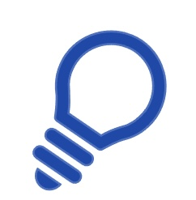
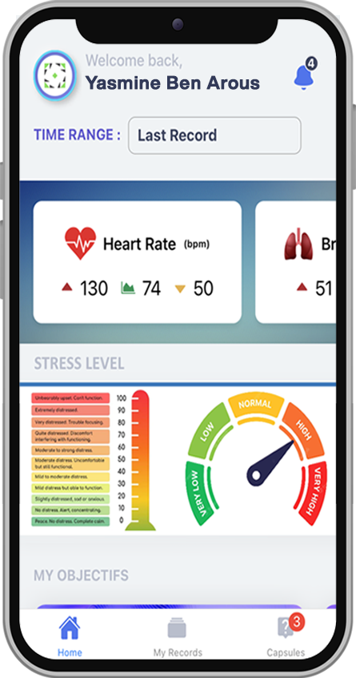
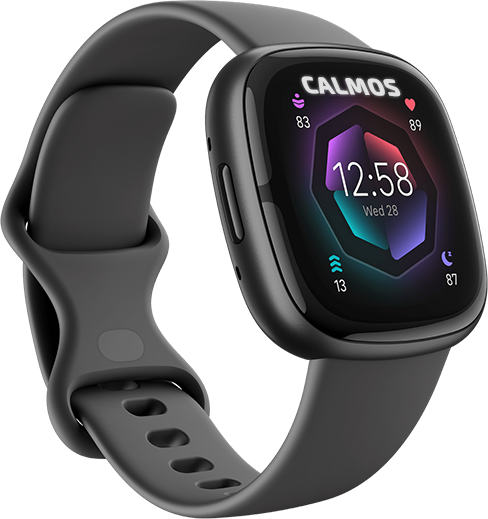
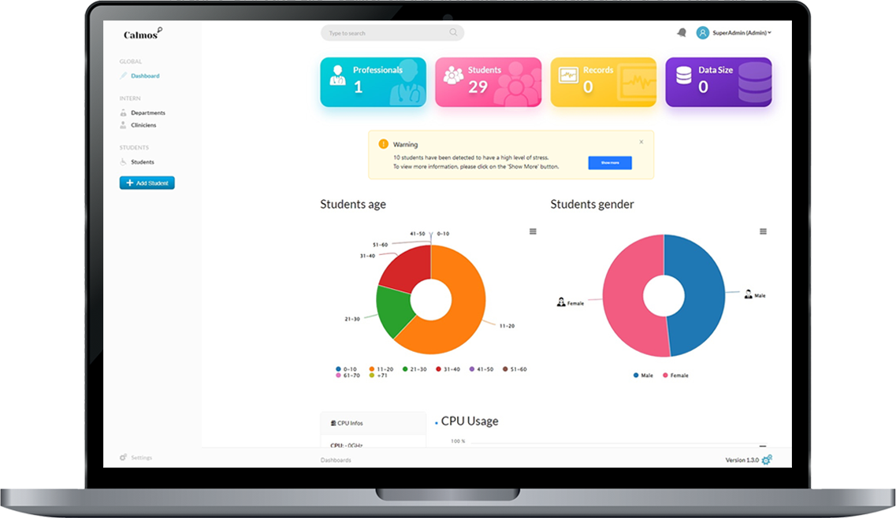
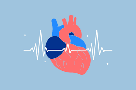

Calmos est une application mobile conçue pour faire le suivi à distance de l’anxiété d’étudiants ayant un trouble anxieux. Cette technologie a pour but d'améliorer la santé mentale de ces utilisateurs en fournissant une solution innovante de suivi et de gestion de l'anxiété.
Grâce à notre application, synchronisée avec un objet connecté et soutenue par une intelligence artificielle, nous fournissons un soutien personnalisé et des ressources adaptées pour aider les étudiants à mieux comprendre et gérer leur détresse mentale
Notre mission
Développer une solution technologique, en occurrence une application mobile alimentée par un bracelet connecté et munie d’une intelligence artificielle, pour assurer un suivi efficace des élèves anxieux.
Nos statistiques ont démontré que 2 élèves sur 3 en secondaire 1 ont besoin d'un suivi de leur anxiété. Notre application vise à:
|  |
|
Notre histoire
Ce projet a été premièrement présentée dans le cadre d'Expo Sciences 2022 par une élève de l'école secondaire College Notre-Dame avec le soutien de plusieurs professionnels.
La mise en oeuvre de ce projet a été réaliser selon les étapes suivantes:
Choix de l'objet connecté
Collecte de données
Analyse des données
Design et fonctionnalité
Nous proposons d’utiliser les bracelets connectés de Fitbit, à savoir la Sense 2 ou bien la Charge 5. Ces bracelets sont munis de trois capteurs qui permettent de mesurer les paramètres identifiés pour l’évaluation de l’état d’anxiété: |
 |
La collecte de données a été faite au Collège Notre-Dame auprès de 25 élèves mis en situation de stress en suivant le protocole du Trier Social Stress Test, un test connu dans le milieu de la recherche pour la détection des biomarqueurs liée au stress.
L’analyse des données collectées nous a permis de conclure que la moyenne d’augmentation du rythme cardiaque au repos et celui en situation de stress est de l’ordre de 128%.
Calmos est une application mobile et web destiné aux élèves et aux travailleurs sociaux qui comprend principalement trois modules. Une Interface web pour le travailleur social, une application mobile d’autogestion de l’anxiété pour l'élève et finalement, une notification qui sera envoyée au travailleur social pour l’informer de la détresse de l’élève.
|  |
Ressources documentaires
|
Anxiété généralisée |

Associations between Sleep Quality and Heart Rate Variability |